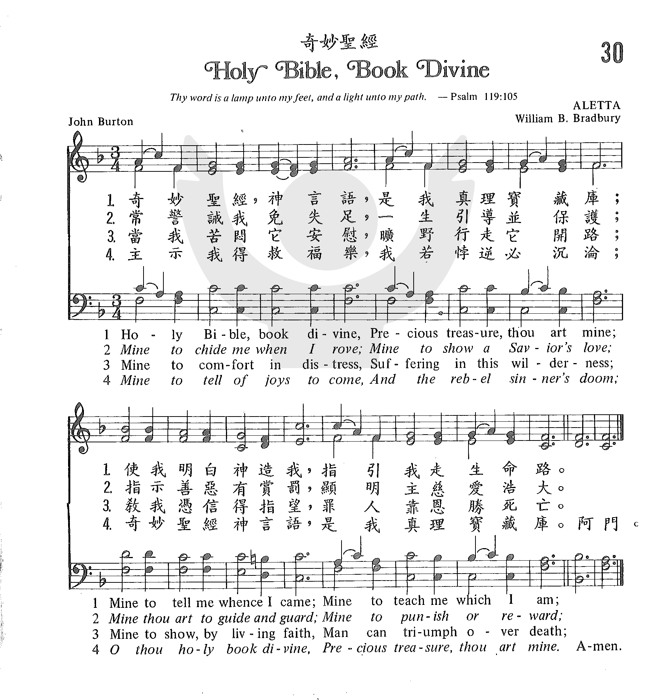

0994
Holy Bible Book Divine
_John Burton
奇妙圣经
|
|
|
|
1 Holy Bible, book divine,
Precious treasure, thou art mine;
Mine to tell me whence I came,
Mine to teach me what I am:
2 Mine to chide me when I rove;
Mine to show a Savior's love;
Mine thou art to guide and guard;
Mine to punish or reward;
3 Mine to comfort in distress,
Suffering in this wilderness;
Mine to show by living faith,
Man can triumph over death;
4 Mine to tell of joys to come,
And the rebel sinner's doom;
O thou holy book divine,
Precious treasure, thou art mine.
Source: African
Methodist Episcopal Church Hymnal #205
|
“030 奇妙聖經 HOLY BIBLE, BOOK DIVINE.mp3” by DOW YOUNG.
奇妙聖經
奇妙聖經，神言語，
是我真理寶藏庫；
使我明白神造我，指引我走生命路。
常警誡我免失足，
一生引導並保護；
指示善惡有賞罰，顯明主慈愛浩大。
當我苦悶它安慰，
曠野行走它開路；
教我憑信得指望，罪人靠恩勝死亡。
主示我得救福樂，
我若悖逆必沈淪；
奇妙聖經神言語，是我真理寶藏庫。
|
|
https://www.zanmeishige.com/tab/25347.html?songbook=1&index=30
 |
|
|
|
 教會聖詩
30 奇妙聖經 Holy Bible, Book divine
教會聖詩
30 奇妙聖經 Holy Bible, Book divine
-
赞美诗137首: 奇妙圣经 Holy Bible, Book Divine
-
Lyrics with Orchestral Music For Worship Hymn / Song : -Holy Bible Book
Divine.
-
Holy Bible, Book Divine · Bible Truth Kids
0994
Holy Bible Book Divine
奇妙圣经
|
Short Name: |
John Burton |
|
Full Name: |
Burton, John, 1773-1822 |
|
Birth Year: |
1773 |
|
Death Year: |
1822 |
Burton, John,
born 1773, in Nottingham, where he resided until 1813, when he removed to
Leicester, at which town he died in 1822. He was a Baptist, a very earnest
Sunday School teacher, and one of the compilers of the Nottingham Sunday
School Union Hymn Book, 1812. This book reached the 20th edition in
1861. The 1st edition contains 43 hymns which have his signature. He is
known almost exclusively by one hymn, "Holy Bible, book divine" (q.v.). He
was also author of The Youth's Monitor, and other
similar productions for the young. Robert Hall wrote a recommendatory
preface to one of his works. [Rev. W. R. Stevenson, M. A.]
-- John Julian, Dictionary
of Hymnology (1907)
Notes
Holy
Bible, book Divine. J. Burton, sen. [Holy Scripture.]
This popular hymn first appeared in the author's Youth's
Monitor in Verse, &c, 1803, and again in the Evangelical
Magazine, June, 1805, in 4 stanzas of 4 lines, where it is
signed, "Nottingham—J. B."
In 1806 it was also given as No. 1 of pt. ii. of the author's Hymns
for Sunday Schools; or, Incentives to Early Piety. As it is
frequently altered in modern collections we add the original text.
"Holy Bible,
book Divine,
Precious treasure, thou art mine;
Mine to tell me whence I came,
Mine to teach me what I am.
"Mine to chide
me when I rove,
Mine to shew a Saviour's love;
Mine art thou to guide my feet,
Mine to judge, condemn, acquit.
"Mine to
comfort in distress,
If the Holy Spirit bless;
Mine to shew by living faith
Man can triumph over death.
"Mine to tell
of joys to come,
And the rebel sinner's doom;
Holy Bible, book Divine,
Precious treasure, thou art mine."
This hymn has
gradually grown into favour, and now it is in common use in most
English-speaking countries.
--John Julian, Dictionary
of Hymnology (1907)
Tune Information
|
Title: |
ALETTA |
|
Composer: |
William B. Bradbury (1860) |
|
Meter: |
7.7.7.7 |
|
Incipit: |
35122 21233 51222 |
|
Key: |
F Major |
|
Copyright: |
Public Domain |
Words: John Burton Sr. (b. Feb. 26, 1773; d. June 24, 1822)
Music: Aletta, by William Batchelder Bradbury (b. Oct. 6, 1816; d. Jan. 7, 1868)
Links:
Wordwise Hymns
The Cyber Hymnal
Note: With its original publication, this hymn’s authorship was identified
simply as “Nottingham–J.B.” (Mr. Burton living in Nottingham, England, at the
time). Later, he married and moved to Leicester. In subsequent publications of
the song his name is given as John Burton Senior. This was to distinguish him
from another author with the same name–though John Burton Junior was not his
son.
This excellent hymn is about the Bible, and some of the things it teaches. To
put it in its historical context, we need to consider something important that
was happening around the time it was written in 1803. (A longer version of the
following is found here.)
Robert Raikes, an Anglican layman, is credited with founding the Sunday School
movement. His heart went out to the ragged children of the slums, worn down by
slave labour , running wild, and exposed to all kinds of vice. Most of them were
illiterate. There were no state schools of any kind back then, and Mr. Raikes
believed that a good education would give children a much better start in life,
so he started a school.
His “Sunday School” began in the kitchen of a home, in Gloucester, in July of
1780. At first it was for boys only, but soon girls came too. Since the children
worked in the factories six days a week, Raikes decided to hold his school on
Sundays. The Bible was used as the textbook, and church attendance was part of
the Sunday program.
Strong discipline was needed to control the children Raikes worked with. But it
was administered in an interesting way. When a child was disruptive and
disobedient, Mr. Raikes would take the offender home, and have parents
administer chastisement to “the seat of learning.” Then, he would bring the
student back to school again.
Robert Raikes certainly had his early detractors, who said “Raikes’ Ragged
School” was a violation of the Lord’s Day, when Christians shouldn’t be working.
But Methodist founder John Wesley supported the work enthusiastically. In spite
of its critics, the movement continued to grow. In four years, there were
250,000 pupils, as schools sprang up all over the country. By 1831, there were
1,250,000 attending Sunday School (about a quarter of the population of Great
Britain at that time).
John Burton himself was one of the Sunday School teachers. He wrote and
published songs for the Sunday School, and music greatly helped in the teaching
and training of those who attended. Committing songs such as this one to memory
enabled illiterate children to get their first grasp on eternal truth. Praise
the Lord for men such as Robert Raikes and John Burton!
CH-1: The Bible teaches us where we came from–that we are a creation of God–and
what we are–the crown of God’s creation (Gen. 1:26-28). CH-2: Through God’s Word
we are convicted of sin and chastised by a loving God, when that is needed (Rom.
3:20; 7:7; Heb. 12:5-6). Not only does its teaching guide and guard us through
life (Ps. 119:105, 130), it provides “comfort in distress” (CH-3; cf. Ps.
119:49-50), and shows the way to gain life eternal (Jn. 3:16). CH-4: The destiny
of lost sinners, and the eternal joys of the saints are made known in its pages
(Matt. 25:34, 41).
CH-1) Holy Bible, book divine,
Precious treasure, thou art mine;
Mine to tell me whence I came;
Mine to teach me what I am.
CH-4) Mine to tell of joys to come,
And the rebel sinner’s doom;
O thou holy book divine,
Precious treasure, thou art mine.
Questions:
1) Suppose you were Robert Raikes, designing a curriculum for the children he
sought to reach. What key truths would you begin with? And why?
2) What makes the Bible a “precious treasure” to you, personally?
Links:
Wordwise Hymns
The Cyber Hymnal
https://wordwisehymns.com/2012/04/13/holy-bible-book-divine/
"HOLY BIBLE, BOOK DIVINE"
hymnstudiesblog
"…He expounded unto them in all the scriptures the things concerning Himself" (Lk.
24.27)
INTRO.:
A hymn which stresses the importance that the scriptures should have to us is
"Holy Bible, Book Divine." The text was written by John Burton Sr., who was born
at Nottingham, England, on Feb. 26, 1773. Active in the Baptist Church, he
became interested in Sunday school work and produced his first hymns for the
children of his Sunday school. In 1802 he published a volume of these hymns
entitled The Youth’s
Monitor in Verse, in a Series of Little Tales, Emblems, Poems and Songs.
"Holy Bible, Book Divine" first appeared in the 1803 edition of this work. It
became well known after being inlcuded in the Evangelical
Magazine of June, 1805. Burton went on in 1806 to edit Hymns
for Sunday Schools, or Incentives for Early Piety, and in 1810 helped
compile the Nottingham Sunday
School Union Hymn Book, which passed through twenty editions by 1861.
By then Burton had moved to Leicester, England, in 1813, and died there on June
24, 1822. The tune (Aletta) was composed by William Batchelder Bradbury
(1816-1868). It first appeared in his 1858 book The
Jubilee, where it was set to "Weary sinner, keep thine eyes" (some sources
give the date of 1860). Among hymnbooks published by members of the Lord’s
church for use in churches of Christ during the twentieth century, "Holy Bible,
Book Divine" was found in the 1963 Christian
Hymnal edited by J. Nelson Slater. Today it is included in the
1992 Praise
for the Lord edited by John P. Wiegand and the 1994 Songs
of Faith and Praise edited by Alton H. Howard.
The song gives several reasons why the Bible is so important.
I. Stanza 1 reminds us that the Bible is a book divine
"Holy Bible, book divine, Precious treasure, thou art mine;
Mine to tell me whence I came, Mine to teach me what I am."
A. The Bible is a book divine because it is given by inspiration of God: 2 Tim.
3.16-17
B. Therefore, it is truly a treasure, more precious than gold: Ps. 19.8-11
C. The Bible tells us whence we came and what we are–created by God in His own
image, Gen. 1.26-28
II. Stanza 2 reminds us that the Bible shows us the Savior’s love
"Mine to chide me when I rove, Mine to show a Savior’s love;
Mine thou art to guide and guard, Mine to punish or reward."
(The original third and fourth lines read "Mine art thou to guide my feet,
Mine to judge–condemn, acquit.")
A. The preaching of God’s word is designed first to reprove and rebuke: 2 Tim.
4.2
B. Yet in everything it does, it shows a Savior’s love for our souls: Eph. 5.2
C. It is based on our response to it that we will be punished or rewarded: Rom.
2.16
III. Stanza 3 reminds us that the Bible is the source of our faith
"Mine to comfort in distress, Suffering in this wilderness;
Mine to show, by living faith, Man can triumph over death."
(The original second line read, "If the Holy Spirit bless.")
A. The Bible provides comfort in the distress and suffering that we experience
in this wilderness: 1 Thess. 4.18
B. This comfort, however, can be had only by those whose faith comes from the
hearing of God’s word and who then walk by that faith: Rom. 10.17, 2 Cor. 5.7
C. God’s word then shows that such a strong faith will triumph over death: 1
Cor. 15.50-57
IV. Stanza 4 reminds us that the Bible enables us to have joys to come
"Mine to tell of joys to come, And the rebel sinner’s doom;
O thou holy book divine, Precious treasure, thou art mine."
(The original third line was a repetition of the first line of stanza 1,
"Holy Bible, book divine.")
A. It is in the Bible that we learn of joys to come for the Lord’s people: Mk.
10.29-30
B. It is also in the Bible that we learn of the rebel sinner’s doom: Rev. 21.8
C. Therefore, we must look to the Bible to provide the light that we need to
escape that doom and receive those joys: Ps. 119.105, Matt. 7.13-14
CONCL.:
This little song used to be found in most hymnbooks generally, though not in
many of ours. I am happy that some of our newer books have included it, so that
we can become acquainted with it and learn what it has to teach us. While there
are a lot of different subjects about which we can sing to praise God and teach
one another, it is good to sing songs about the blessings and benefits that are
to be found in the "Holy Bible, Book Divine."
https://hymnstudiesblog.wordpress.com/2008/06/20/quotholy-bible-book-divinequot/